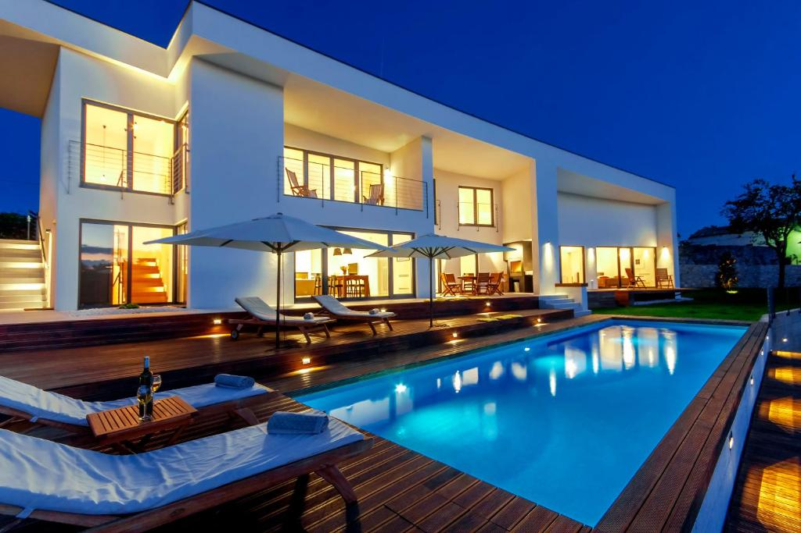

<!DOCTYPE html>
<html lang="en">
<head>
    <meta charset="UTF-8">
    <meta http-equiv="X-UA-Compatible" content="IE=edge">
    <meta name="viewport" content="width=device-width, initial-scale=1.0">
    <link rel="stylesheet" href="https://cdnjs.cloudflare.com/ajax/libs/font-awesome/6.1.1/css/all.min.css" integrity="sha512-KfkfwYDsLkIlwQp6LFnl8zNdLGxu9YAA1QvwINks4PhcElQSvqcyVLLD9aMhXd13uQjoXtEKNosOWaZqXgel0g==" crossorigin="anonymous" referrerpolicy="no-referrer" />     
    <title>12. Cas domaci</title>
</head>
<body>

</body>
</html>
<div style=" background-color: aqua ; width:500px;padding: 0px; ">

    

<div style="padding:15px;">
    <h1>Vila oslobodjenja br.4</h1>
        <h1>10000 Beograd</h1>
        <br> <i class="fa fa-home" aria-hidden="true" id="icon"></i> Vila poseduje 30 soba
        <br>
        <br><i class="fa fa-tint" aria-hidden="true" id="icon"></i> Vila poseduje bazen  
        <br>
        <br><i class="fa fa-bath" aria-hidden="true" id="icon"></i> Vila ima 3 kupatila
        <br>
        <br><i class="fa fa-university" aria-hidden="true" id="icon"></i> Pored vile nalaze se 2 univerziteta          
        <br> 
        <br><i class="fa fa-futbol" aria-hidden="true" id="icon"></i> Vila poseduje teren za fudbal 
        <br>    
        <br><i class="fa fa-plus" aria-hidden="true" id="icon"></i> Vila ima 200m<sup>2</sup>
        <br>                            
        <br><i class="fa fa-arrow-right" aria-hidden="true"id="icon"></i> Za sve dodatne informacijemozete pozvati na broj telefona       
        <br>
        <br><i class="fa-solid fa-square-phone" id="icon"></i> +381/65 6868 348   
        <br>            
        

</div>
</div>     
</body> 
</html>
